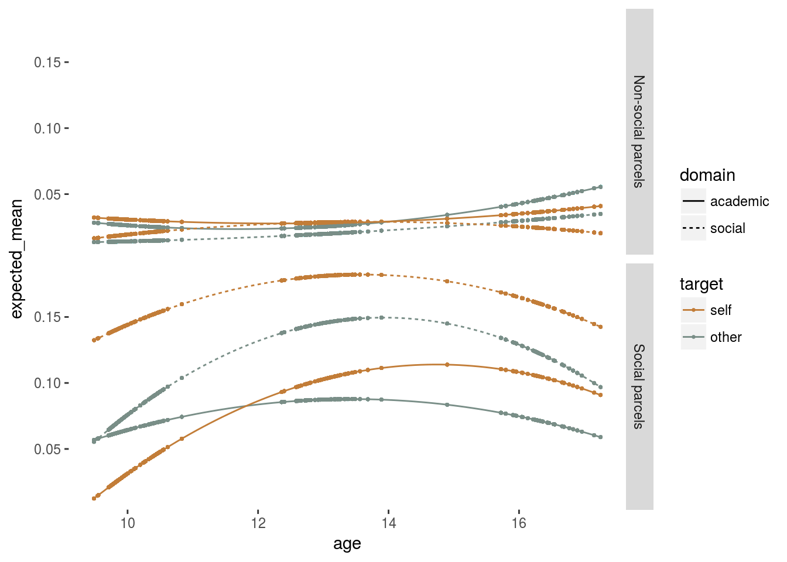
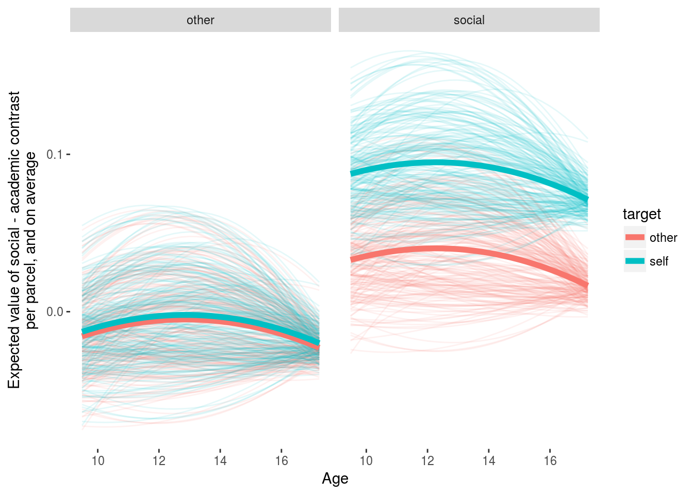
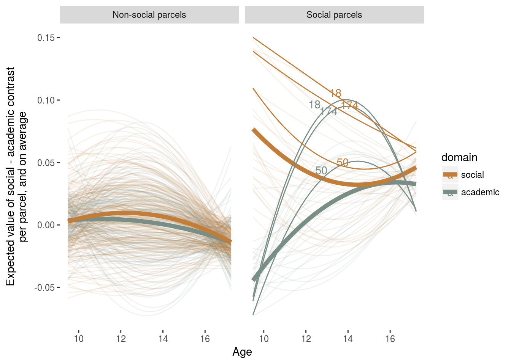
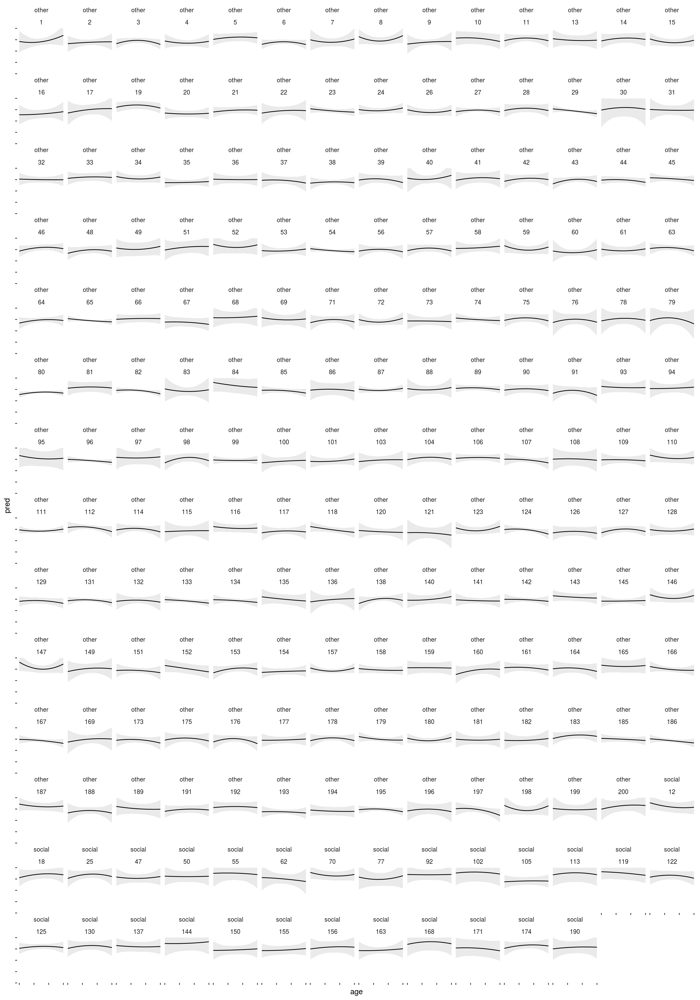
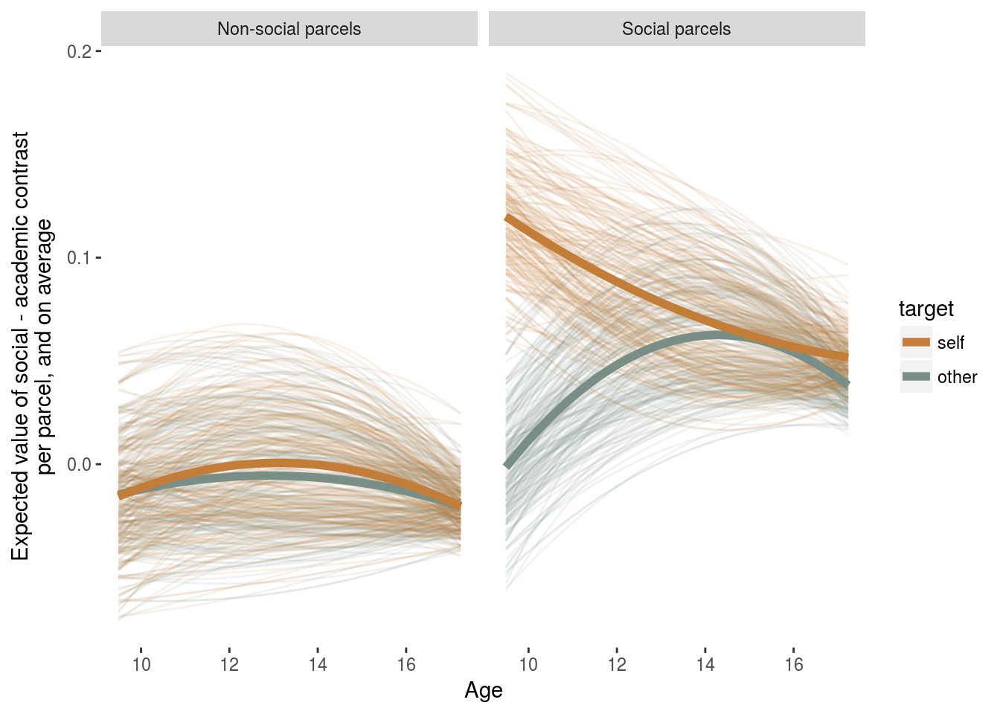

Thinking about social and academic traits across adolescence
jcf
Using individual contrasts estimates
Load the data
# pdf(file = NULL)
library(tidyverse)## Loading tidyverse: ggplot2
## Loading tidyverse: tibble
## Loading tidyverse: tidyr
## Loading tidyverse: readr
## Loading tidyverse: purrr
## Loading tidyverse: dplyr## Conflicts with tidy packages ----------------------------------------------## filter(): dplyr, stats
## lag(): dplyr, statsdata_dir <- '/data/jflournoy/SFIC_Self3/soc_acad/'
social.roi <- c(174, 18, 50, 119, 12, 171, 70, 144, 150, 156, 105, 102, 113, 55, 92, 137, 168, 122, 125, 62, 47, 190, 77, 155, 163, 25, 130)
self.roi <- c(130, 156, 174, 18, 25, 37, 50, 55, 150, 156, 105)
poi <- c(50, 18, 174) #specify parcels of particular interest for highlighting in the random effects plots
parcel_label <- data_frame(parcellation = c(social.roi, self.roi),
label = c(rep('social', length(social.roi)),
rep('self', length(self.roi)))) %>%
filter(label == 'social')
covariates <- read.csv(file.path(data_dir, 'SFIC_age.pds.gender.csv')) %>%
mutate(SID = sprintf("s%03d", SID)) %>%
rename("subjectID" = SID)
fxParcelDF <- read_csv(file.path(data_dir, 'fxParcellations.csv')) %>%
left_join(parcel_label) %>%
mutate(label = ifelse(is.na(label), 'other', label)) %>%
mutate(wavenum = c(`10` = 1, `13` = 2, `16` = 3)[as.character(age)]) %>%
select(-age) %>%
left_join(covariates)## Parsed with column specification:
## cols(
## subjectID = col_character(),
## age = col_integer(),
## target = col_character(),
## domain = col_character(),
## parcellation = col_integer(),
## beta = col_double(),
## sd = col_double()
## )## Joining, by = "parcellation"## Joining, by = c("subjectID", "wavenum")MLM it up
No age effect on condition interaction
We’re sort of approaching this as if we have crossed random effects – the individual subject random effect, as well as the parcel randome effect (i.e., what’s the effect in this parcel). We have a lot of time-varying covariates that will apear at the first level, and we also have parcel-level predictors (whether we think, a prior that a parcel is involved in social cognition or something like that). We also might have subject-level predictors like biological sex or some measure of academic performance. Our full model will be
\[ \begin{eqnarray} \text{FX_BETA}_{ijk} &=& \beta_{0jk} + \beta_{1jk} \text{AGE}_{i} + \beta_{20k} \text{AGE}^2_{i} + \\ &&\beta_{30k}\text{TARGET}_{i} + \beta_{40k}\text{DOMAIN}_{i} + \beta_{500}\text{TARGET}_{i}\text{DOMAIN}_{i} +\\ &&\text{AGE}_{i}(\beta_{6jk}\text{TARGET}_{i} + \beta_{7jk}\text{DOMAIN}_{i}) + \\ &&\text{AGE}_{i}^2(\beta_{80k}\text{TARGET}_{i} + \beta_{90k}\text{DOMAIN}_{i}) + \epsilon_{ijk} \\ \beta_{0jk} &=& \gamma_{000} + \gamma_{001}\text{LABEL}_{k} + \eta_{0j0} + \eta_{00k}\\ \beta_{1jk} &=& \gamma_{100} + \gamma_{101}\text{LABEL}_{k} + \eta_{1j0} + \eta_{10k}\\ \beta_{20k} &=& \gamma_{20} + \gamma_{201}\text{LABEL}_{k} + \eta_{20k} \\ \beta_{30k} &=& \gamma_{300} + \gamma_{301}\text{LABEL}_{k} + \eta_{3j0} + \eta_{30k} \\ \beta_{40k} &=& \gamma_{400} + \gamma_{401}\text{LABEL}_{k} + \eta_{4j0} + \eta_{40k} \\ \beta_{500} &=& \gamma_{500} + \gamma_{501}\text{LABEL}_{k} \\ \beta_{6jk} &=& \gamma_{600} + \gamma_{601}\text{LABEL}_{k} + \eta_{6j0} + \eta_{60k} \\ \beta_{7jk} &=& \gamma_{700} + \gamma_{701}\text{LABEL}_{k} + \eta_{7j0} + \eta_{70k} \\ \beta_{80k} &=& \gamma_{800} + \gamma_{801}\text{LABEL}_{k} + \eta_{80k} \\ \beta_{90k} &=& \gamma_{900} + \gamma_{901}\text{LABEL}_{k} + \eta_{90k} \\ \end{eqnarray} \]
for observation \(i\) within subject \(j\) for parcel \(k\), where \(\text{LABEL}\) is our classification of the ROI as either social or not. Notice that I am for now not accounting for the possibility that subjects may differ in the effect of the label of the cluster (which would mean including the label in (... | subjecID) the model formula below, and a term like \(\eta_{0j1}\text{LABEL}_{k}\) in the above).
library(lme4)## Loading required package: Matrix##
## Attaching package: 'Matrix'## The following object is masked from 'package:tidyr':
##
## expandfxParcelDF.agec <- fxParcelDF %>%
mutate(age_c = age - 13, age_c2 = age_c^2)
simpleMod <- lmer(beta ~ 1 + age_c*label + age_c2*label + target*domain*label +
age_c*target*label + age_c2*target*label+
age_c*domain*label + age_c2*domain*label +
(1 | subjectID) +
(1 | parcellation),
data = fxParcelDF.agec,
control=lmerControl(optimizer = "nloptwrap", calc.derivs = FALSE))
summary(simpleMod)## Linear mixed model fit by REML ['lmerMod']
## Formula: beta ~ 1 + age_c * label + age_c2 * label + target * domain *
## label + age_c * target * label + age_c2 * target * label +
## age_c * domain * label + age_c2 * domain * label + (1 | subjectID) +
## (1 | parcellation)
## Data: fxParcelDF.agec
## Control: lmerControl(optimizer = "nloptwrap", calc.derivs = FALSE)
##
## REML criterion at convergence: 115088.7
##
## Scaled residuals:
## Min 1Q Median 3Q Max
## -16.5627 -0.4721 -0.0114 0.4512 22.6209
##
## Random effects:
## Groups Name Variance Std.Dev.
## parcellation (Intercept) 0.0345923 0.18599
## subjectID (Intercept) 0.0008726 0.02954
## Residual 0.1446933 0.38039
## Number of obs: 125712, groups: parcellation, 194; subjectID, 81
##
## Fixed effects:
## Estimate Std. Error t value
## (Intercept) 0.0218028 0.0152465 1.430
## age_c 0.0011896 0.0008444 1.409
## labelsocial 0.0714796 0.0398089 1.796
## age_c2 0.0007604 0.0004284 1.775
## targetself -0.0062608 0.0046321 -1.352
## domainsocial 0.0034869 0.0046321 0.753
## age_c:labelsocial 0.0032128 0.0021671 1.483
## labelsocial:age_c2 -0.0039984 0.0011246 -3.555
## targetself:domainsocial 0.0028939 0.0046253 0.626
## labelsocial:targetself -0.0060640 0.0124164 -0.488
## labelsocial:domainsocial 0.0446862 0.0124164 3.599
## age_c:targetself -0.0026883 0.0009335 -2.880
## age_c2:targetself 0.0008766 0.0004844 1.810
## age_c:domainsocial 0.0008518 0.0009335 0.912
## age_c2:domainsocial -0.0020794 0.0004844 -4.292
## labelsocial:targetself:domainsocial 0.0517771 0.0123982 4.176
## age_c:labelsocial:targetself 0.0046373 0.0025024 1.853
## labelsocial:age_c2:targetself 0.0007658 0.0012986 0.590
## age_c:labelsocial:domainsocial -0.0011613 0.0025024 -0.464
## labelsocial:age_c2:domainsocial -0.0000187 0.0012986 -0.014##
## Correlation matrix not shown by default, as p = 20 > 12.
## Use print(x, correlation=TRUE) or
## vcov(x) if you need itfx_model_equation <- formula(beta ~ 1 + age_c*label + age_c2*label + target*domain*label +
age_c*target*label + age_c2*target*label+
age_c*domain*label + age_c2*domain*label +
(1 + age_c*target + age_c*domain | subjectID) +
(1 + age_c + age_c2 +
age_c*target + age_c2*target +
age_c*domain + age_c2*domain | parcellation))
aformula <- lFormula(fx_model_equation, data = fxParcelDF.agec)
numFx <- length(dimnames(aformula$X)[[2]])
numRx <- sum(as.numeric(lapply(aformula$reTrms$cnms, function(x) {
l <- length(x)
(l*(l-1))/2+l
})))
maxfun <- 10*(numFx+numRx+1)^2
saveModelFile <- file.path(data_dir, 'full_mlm.RDS')
if(file.exists(saveModelFile)){
fullModel <- readRDS(saveModelFile)
} else {
fullModel <- lmer(fx_model_equation, data = fxParcelDF.agec, verbose = 2,
control=lmerControl(optCtrl=list(maxfun=maxfun), optimizer = "nloptwrap", calc.derivs = FALSE))
saveRDS(fullModel, saveModelFile)
}
summary(fullModel)## Linear mixed model fit by REML ['lmerMod']
## Formula: beta ~ 1 + age_c * label + age_c2 * label + target * domain *
## label + age_c * target * label + age_c2 * target * label +
## age_c * domain * label + age_c2 * domain * label + (1 + age_c *
## target + age_c * domain | subjectID) + (1 + age_c + age_c2 +
## age_c * target + age_c2 * target + age_c * domain + age_c2 *
## domain | parcellation)
## Data: fxParcelDF.agec
## Control:
## lmerControl(optCtrl = list(maxfun = maxfun), optimizer = "nloptwrap",
## calc.derivs = FALSE)
##
## REML criterion at convergence: 111799.8
##
## Scaled residuals:
## Min 1Q Median 3Q Max
## -14.2534 -0.4754 -0.0092 0.4547 22.7470
##
## Random effects:
## Groups Name Variance Std.Dev. Corr
## parcellation (Intercept) 3.763e-02 0.193974
## age_c 1.102e-04 0.010497 0.57
## age_c2 4.941e-06 0.002223 -0.58 -0.68
## targetself 1.468e-03 0.038314 -0.15 -0.06 0.76
## domainsocial 1.452e-03 0.038108 0.25 0.56 -0.18
## age_c:targetself 4.881e-06 0.002209 -0.12 0.26 -0.29
## age_c2:targetself 3.972e-06 0.001993 0.35 0.22 -0.86
## age_c:domainsocial 1.577e-05 0.003971 0.64 0.15 -0.52
## age_c2:domainsocial 2.089e-06 0.001445 -0.42 -0.70 0.34
## subjectID (Intercept) 0.000e+00 0.000000
## age_c 3.138e-04 0.017715 NaN
## targetself 3.832e-03 0.061902 NaN 0.73
## domainsocial 1.738e-03 0.041689 NaN -0.72 -0.83
## age_c:targetself 5.899e-04 0.024288 NaN -0.83 -0.95
## age_c:domainsocial 2.558e-04 0.015993 NaN 0.55 0.87
## Residual 1.399e-01 0.374062
##
##
##
##
##
## 0.23
## -0.24 -0.57
## -0.97 -0.20 0.30
## -0.47 -0.56 0.47 0.62
## -0.15 -0.98 0.48 0.09 0.38
##
##
##
##
## 0.88
## -0.86 -0.89
##
## Number of obs: 125712, groups: parcellation, 194; subjectID, 81
##
## Fixed effects:
## Estimate Std. Error t value
## (Intercept) 0.0263327 0.0154522 1.704
## age_c 0.0035115 0.0023052 1.523
## labelsocial 0.0714796 0.0413775 1.728
## age_c2 0.0011568 0.0004817 2.401
## targetself 0.0037947 0.0088968 0.427
## domainsocial -0.0049446 0.0072678 -0.680
## age_c:labelsocial 0.0032128 0.0030467 1.055
## labelsocial:age_c2 -0.0039984 0.0011982 -3.337
## targetself:domainsocial 0.0028939 0.0045484 0.636
## labelsocial:targetself -0.0060640 0.0145685 -0.416
## labelsocial:domainsocial 0.0446862 0.0145453 3.072
## age_c:targetself -0.0021045 0.0028839 -0.730
## age_c2:targetself -0.0007186 0.0005440 -1.321
## age_c:domainsocial -0.0002610 0.0020664 -0.126
## age_c2:domainsocial -0.0009411 0.0005303 -1.775
## labelsocial:targetself:domainsocial 0.0517771 0.0121920 4.247
## age_c:labelsocial:targetself 0.0046373 0.0025031 1.853
## labelsocial:age_c2:targetself 0.0007658 0.0013422 0.571
## age_c:labelsocial:domainsocial -0.0011613 0.0025950 -0.448
## labelsocial:age_c2:domainsocial -0.0000187 0.0013117 -0.014##
## Correlation matrix not shown by default, as p = 20 > 12.
## Use print(x, correlation=TRUE) or
## vcov(x) if you need itLooking at the above fixed effects output (starting from the most complex interaction terms and working up, and looking at large t values to get a sense of the precision of the estimate), we see an interesting estimate for label = social, target = self, domain = social. That is, averaging across age, when the target is the self, and the word is social, social areas are expected to have a bigger response than non-social areas. We also see that the quadratic trend for the social domain is more negative, across labels and targets, than the quadratic trend for the academic domain – however, this t value isn’t very big. There are other precise estimates in the table, but it’ll be easier to see what this model is doing represented visually.
I was curious to see if this complicated random effect model produced different fixed-effects estimates than a simpler model. It matters quite a bit, as you can see below (the values are proportions of the simple model coefficients), the random effects model fits better than a simpler model, and we want to visualize the per-parcel estimates, so that’s what we’ll be looking at below.
#some big differences in fixed effect estimates
round((fixef(fullModel) - fixef(simpleMod))/fixef(simpleMod),2)## (Intercept) age_c
## 0.21 1.95
## labelsocial age_c2
## 0.00 0.52
## targetself domainsocial
## -1.61 -2.42
## age_c:labelsocial labelsocial:age_c2
## 0.00 0.00
## targetself:domainsocial labelsocial:targetself
## 0.00 0.00
## labelsocial:domainsocial age_c:targetself
## 0.00 -0.22
## age_c2:targetself age_c:domainsocial
## -1.82 -1.31
## age_c2:domainsocial labelsocial:targetself:domainsocial
## -0.55 0.00
## age_c:labelsocial:targetself labelsocial:age_c2:targetself
## 0.00 0.00
## age_c:labelsocial:domainsocial labelsocial:age_c2:domainsocial
## 0.00 0.00#but much better fit, and we sort of want to be able to estimate each parcel's effect.
anova(fullModel, simpleMod, refit = F)[,-1] #refit = F because it's the random effects that are different## AIC BIC logLik deviance Chisq Chi Df Pr(>Chisq)
## simpleMod 115135 115359 -57544 115089
## fullModel 111974 112821 -55900 111800 3288.9 64 < 2.2e-16 ***
## ---
## Signif. codes: 0 '***' 0.001 '**' 0.01 '*' 0.05 '.' 0.1 ' ' 1Age effect on the condition interaction
There is the possibility that not including the 4-way interaction between \(\text{AGE}\) (or \(\text{AGE}^2\)) and \(\text{LABEL}\), \(\text{TARGET}\), and \(\text{DOMAIN}\) is not a good idea. That’s a hell of an interaction to interpret, but it’s the final piece that allows all of our estimates to be unconstrained (I think). That is, we can get a fixed effect estimate of age for every cell of the design, for each of the two brain region types. For now, like before, we’ll not include randome effect of parcel (or subject) for this term, though in reality it’s probably reasonable to expect that each parcel might show a different effect like this. That full model will be
\[ \begin{eqnarray} \text{FX_BETA}_{ijk} &=& \beta_{0jk} + \beta_{1jk} \text{AGE}_{i} + \beta_{20k} \text{AGE}^2_{i} + \\ &&\beta_{30k}\text{TARGET}_{i} + \beta_{40k}\text{DOMAIN}_{i} + \beta_{500}\text{TARGET}_{i}\text{DOMAIN}_{i} +\\ &&\text{AGE}_{i}(\beta_{6jk}\text{TARGET}_{i} + \beta_{7jk}\text{DOMAIN}_{i}) + \\ &&\text{AGE}_{i}^2(\beta_{80k}\text{TARGET}_{i} + \beta_{90k}\text{DOMAIN}_{i}) + \\ &&\text{AGE}_{i}(\beta_{10jk}\text{TARGET}_{i}\text{DOMAIN}_{i}) + \\ &&\text{AGE}_{i}^2(\beta_{110k}\text{TARGET}_{i}\text{DOMAIN}_{i}) + \epsilon_{ijk} \\ \beta_{0jk} &=& \gamma_{000} + \gamma_{001}\text{LABEL}_{k} + \eta_{0j0} + \eta_{00k}\\ \beta_{1jk} &=& \gamma_{100} + \gamma_{101}\text{LABEL}_{k} + \eta_{1j0} + \eta_{10k}\\ \beta_{20k} &=& \gamma_{20} + \gamma_{201}\text{LABEL}_{k} + \eta_{20k} \\ \beta_{30k} &=& \gamma_{300} + \gamma_{301}\text{LABEL}_{k} + \eta_{3j0} + \eta_{30k} \\ \beta_{40k} &=& \gamma_{400} + \gamma_{401}\text{LABEL}_{k} + \eta_{4j0} + \eta_{40k}\\ \beta_{500} &=& \gamma_{500} + \gamma_{501}\text{LABEL}_{k} \\ \beta_{6jk} &=& \gamma_{600} + \gamma_{601}\text{LABEL}_{k} + \eta_{6j0} + \eta_{60k} \\ \beta_{7jk} &=& \gamma_{700} + \gamma_{701}\text{LABEL}_{k} + \eta_{7j0} + \eta_{70k} \\ \beta_{80k} &=& \gamma_{800} + \gamma_{801}\text{LABEL}_{k} + \eta_{80k} \\ \beta_{90k} &=& \gamma_{900} + \gamma_{901}\text{LABEL}_{k} + \eta_{90k} \\ \beta_{10jk} &=& \gamma_{1000} + \gamma_{1001}\text{LABEL}_{k} \\ \beta_{110k} &=& \gamma_{1100} + \gamma_{1101}\text{LABEL}_{k} \end{eqnarray} \]
max_fx_model_equation <- formula(beta ~ 1 + age_c*label + age_c2*label + target*domain*label +
age_c*target*label + age_c2*target*label+
age_c*domain*label + age_c2*domain*label +
age_c*target*domain*label + age_c2*target*domain*label +
(1 + age_c*target + age_c*domain | subjectID) +
(1 + age_c + age_c2 +
age_c*target + age_c2*target +
age_c*domain + age_c2*domain | parcellation))
max_aformula <- lFormula(max_fx_model_equation, data = fxParcelDF.agec)
max_numFx <- length(dimnames(max_aformula$X)[[2]])
max_numRx <- sum(as.numeric(lapply(max_aformula$reTrms$cnms, function(x) {
l <- length(x)
(l*(l-1))/2+l
})))
max_maxfun <- 10*(max_numFx+max_numRx+1)^2
max_saveModelFile <- file.path(data_dir, 'max_full_mlm.RDS')
if(file.exists(max_saveModelFile)){
max_fullModel <- readRDS(max_saveModelFile)
} else {
max_fullModel <- lmer(max_fx_model_equation, data = fxParcelDF.agec, REML=F, #Use ML since we want to compare fixed effects
verbose = 2,
control=lmerControl(optCtrl=list(maxfun=maxfun), optimizer = "nloptwrap", calc.derivs = FALSE))
saveRDS(max_fullModel, max_saveModelFile)
}
summary(max_fullModel)## Linear mixed model fit by maximum likelihood ['lmerMod']
## Formula: beta ~ 1 + age_c * label + age_c2 * label + target * domain *
## label + age_c * target * label + age_c2 * target * label +
## age_c * domain * label + age_c2 * domain * label + age_c *
## target * domain * label + age_c2 * target * domain * label +
## (1 + age_c * target + age_c * domain | subjectID) + (1 +
## age_c + age_c2 + age_c * target + age_c2 * target + age_c *
## domain + age_c2 * domain | parcellation)
## Data: fxParcelDF.agec
## Control:
## lmerControl(optCtrl = list(maxfun = maxfun), optimizer = "nloptwrap",
## calc.derivs = FALSE)
##
## AIC BIC logLik deviance df.resid
## 111707.0 112593.5 -55762.5 111525.0 125621
##
## Scaled residuals:
## Min 1Q Median 3Q Max
## -14.2565 -0.4752 -0.0078 0.4556 22.7516
##
## Random effects:
## Groups Name Variance Std.Dev. Corr
## parcellation (Intercept) 3.818e-02 0.195394
## age_c 1.104e-04 0.010505 0.59
## age_c2 2.826e-06 0.001681 -0.73 -0.98
## targetself 1.074e-03 0.032767 -0.13 -0.14 0.15
## domainsocial 1.314e-03 0.036250 0.28 0.55 -0.53
## age_c:targetself 4.005e-06 0.002001 -0.14 0.29 -0.21
## age_c2:targetself 1.721e-06 0.001312 0.50 0.45 -0.50
## age_c:domainsocial 1.441e-05 0.003796 0.65 0.20 -0.32
## age_c2:domainsocial 2.200e-06 0.001483 -0.44 -0.63 0.64
## subjectID (Intercept) 3.918e-04 0.019793
## age_c 2.965e-04 0.017221 0.05
## targetself 3.473e-03 0.058931 0.02 0.76
## domainsocial 1.956e-03 0.044221 -0.14 -0.76 -0.90
## age_c:targetself 5.931e-04 0.024354 0.00 -0.84 -0.97
## age_c:domainsocial 2.108e-04 0.014520 -0.22 0.57 0.92
## Residual 1.398e-01 0.373917
##
##
##
##
##
## 0.08
## -0.22 -0.55
## -0.90 -0.03 0.33
## -0.51 -0.47 0.39 0.74
## 0.49 -0.82 0.33 -0.53 0.02
##
##
##
##
## 0.90
## -0.81 -0.89
##
## Number of obs: 125712, groups: parcellation, 194; subjectID, 81
##
## Fixed effects:
## Estimate Std. Error t value
## (Intercept) 0.0253430 0.0158616 1.598
## age_c 0.0027382 0.0023675 1.157
## labelsocial 0.0620623 0.0418866 1.482
## age_c2 0.0010261 0.0005405 1.898
## targetself 0.0026600 0.0090690 0.293
## domainsocial -0.0055255 0.0081079 -0.681
## age_c:labelsocial -0.0010097 0.0032862 -0.307
## labelsocial:age_c2 -0.0030089 0.0013232 -2.274
## targetself:domainsocial 0.0061548 0.0078904 0.780
## labelsocial:targetself 0.0127706 0.0164275 0.777
## labelsocial:domainsocial 0.0635209 0.0167394 3.795
## age_c:targetself -0.0020093 0.0030272 -0.664
## age_c2:targetself -0.0004797 0.0007123 -0.673
## age_c:domainsocial -0.0001551 0.0021573 -0.072
## age_c2:domainsocial -0.0007902 0.0007133 -1.108
## labelsocial:targetself:domainsocial 0.0141078 0.0211504 0.667
## age_c:labelsocial:targetself 0.0130822 0.0035034 3.734
## labelsocial:age_c2:targetself -0.0012131 0.0018256 -0.664
## age_c:labelsocial:domainsocial 0.0072835 0.0035667 2.042
## labelsocial:age_c2:domainsocial -0.0019975 0.0018312 -1.091
## age_c:targetself:domainsocial 0.0004418 0.0018353 0.241
## age_c2:targetself:domainsocial -0.0004480 0.0009524 -0.470
## age_c:labelsocial:targetself:domainsocial -0.0168898 0.0049196 -3.433
## labelsocial:age_c2:targetself:domainsocial 0.0039577 0.0025529 1.550##
## Correlation matrix not shown by default, as p = 24 > 12.
## Use print(x, correlation=TRUE) or
## vcov(x) if you need it#to compare to the full model we need to refit it using ML
saveModelFileML <- file.path(data_dir, 'full_mlm_ml.RDS')
if(file.exists(saveModelFileML)){
fullModelML <- readRDS(saveModelFileML)
} else {
fullModelML <- refitML(fullModel, control=lmerControl(optimizer = 'nloptwrap'))
saveRDS(fullModelML, saveModelFileML)
}
anova(fullModelML, max_fullModel, refit = F)[,-1]## AIC BIC logLik deviance Chisq Chi Df Pr(>Chisq)
## fullModelML 111772 112620 -55799 111598
## max_fullModel 111707 112593 -55762 111525 73.375 4 4.395e-15 ***
## ---
## Signif. codes: 0 '***' 0.001 '**' 0.01 '*' 0.05 '.' 0.1 ' ' 1Random Age effect on the condition interaction
All of our effects probably differ across parcels, so we need to include the random effect. Let’s hope this converges. That full model, with random effects for all the terms across parcels will be
\[ \begin{eqnarray} \text{FX_BETA}_{ijk} &=& \beta_{0jk} + \beta_{1jk} \text{AGE}_{i} + \beta_{20k} \text{AGE}^2_{i} + \\ &&\beta_{30k}\text{TARGET}_{i} + \beta_{40k}\text{DOMAIN}_{i} + \beta_{500}\text{TARGET}_{i}\text{DOMAIN}_{i} +\\ &&\text{AGE}_{i}(\beta_{6jk}\text{TARGET}_{i} + \beta_{7jk}\text{DOMAIN}_{i}) + \\ &&\text{AGE}_{i}^2(\beta_{80k}\text{TARGET}_{i} + \beta_{90k}\text{DOMAIN}_{i}) + \\ &&\text{AGE}_{i}(\beta_{10jk}\text{TARGET}_{i}\text{DOMAIN}_{i}) + \\ &&\text{AGE}_{i}^2(\beta_{110k}\text{TARGET}_{i}\text{DOMAIN}_{i}) + \epsilon_{ijk} \\ \beta_{0jk} &=& \gamma_{000} + \gamma_{001}\text{LABEL}_{k} + \eta_{0j0} + \eta_{00k}\\ \beta_{1jk} &=& \gamma_{100} + \gamma_{101}\text{LABEL}_{k} + \eta_{1j0} + \eta_{10k}\\ \beta_{20k} &=& \gamma_{20} + \gamma_{201}\text{LABEL}_{k} + \eta_{20k} \\ \beta_{30k} &=& \gamma_{300} + \gamma_{301}\text{LABEL}_{k} + \eta_{3j0} + \eta_{30k} \\ \beta_{40k} &=& \gamma_{400} + \gamma_{401}\text{LABEL}_{k} + \eta_{4j0} + \eta_{40k}\\ \beta_{500} &=& \gamma_{500} + \gamma_{501}\text{LABEL}_{k} + \eta_{50k}\\ \beta_{6jk} &=& \gamma_{600} + \gamma_{601}\text{LABEL}_{k} + \eta_{6j0} + \eta_{60k} \\ \beta_{7jk} &=& \gamma_{700} + \gamma_{701}\text{LABEL}_{k} + \eta_{7j0} + \eta_{70k} \\ \beta_{80k} &=& \gamma_{800} + \gamma_{801}\text{LABEL}_{k} + \eta_{80k} \\ \beta_{90k} &=& \gamma_{900} + \gamma_{901}\text{LABEL}_{k} + \eta_{90k} \\ \beta_{10jk} &=& \gamma_{1000} + \gamma_{1001}\text{LABEL}_{k} + \eta_{100k} \\ \beta_{110k} &=& \gamma_{1100} + \gamma_{1101}\text{LABEL}_{k} + \eta_{110k} \end{eqnarray} \]
max_rx_fx_model_equation <- formula(beta ~ 1 + age_c*label + age_c2*label + target*domain*label +
age_c*target*label + age_c2*target*label+
age_c*domain*label + age_c2*domain*label +
age_c*target*domain*label + age_c2*target*domain*label +
(1 + age_c*target + age_c*domain | subjectID) +
(1 + age_c + age_c2 + target*domain +
age_c*target + age_c2*target+
age_c*domain + age_c2*domain +
age_c*target*domain + age_c2*target*domain | parcellation))
max_rx_aformula <- lFormula(max_rx_fx_model_equation, data = fxParcelDF.agec)
max_rx_numFx <- length(dimnames(max_rx_aformula$X)[[2]])
max_rx_numRx <- sum(as.numeric(lapply(max_rx_aformula$reTrms$cnms, function(x) {
l <- length(x)
(l*(l-1))/2+l
})))
max_rx_maxfun <- 10*(max_rx_numFx+max_rx_numRx+1)^2
max_rx_saveModelFile <- file.path(data_dir, 'max_rx_full_mlm.RDS')
if(file.exists(max_rx_saveModelFile)){
max_rx_fullModel <- readRDS(max_rx_saveModelFile)
} else {
max_rx_fullModel <- lmer(max_rx_fx_model_equation, data = fxParcelDF.agec, REML=T, #Use ML since we want to compare random effects
verbose = 2,
control=lmerControl(optCtrl=list(maxfun=maxfun), optimizer = "nloptwrap", calc.derivs = FALSE))
saveRDS(max_rx_fullModel, max_rx_saveModelFile)
}
summary(max_rx_fullModel)## Linear mixed model fit by REML ['lmerMod']
## Formula: beta ~ 1 + age_c * label + age_c2 * label + target * domain *
## label + age_c * target * label + age_c2 * target * label +
## age_c * domain * label + age_c2 * domain * label + age_c *
## target * domain * label + age_c2 * target * domain * label +
## (1 + age_c * target + age_c * domain | subjectID) + (1 +
## age_c + age_c2 + target * domain + age_c * target + age_c2 *
## target + age_c * domain + age_c2 * domain + age_c * target *
## domain + age_c2 * target * domain | parcellation)
## Data: fxParcelDF.agec
## Control:
## lmerControl(optCtrl = list(maxfun = max_rx_maxfun), optimizer = "nloptwrap",
## calc.derivs = FALSE)
##
## REML criterion at convergence: 111715.5
##
## Scaled residuals:
## Min 1Q Median 3Q Max
## -14.2254 -0.4754 -0.0074 0.4564 22.7146
##
## Random effects:
## Groups Name Variance Std.Dev. Corr
## parcellation (Intercept) 3.873e-02 0.196800
## age_c 1.061e-04 0.010303 0.62
## age_c2 9.684e-06 0.003112 -0.64
## targetself 1.741e-03 0.041721 -0.39
## domainsocial 8.696e-04 0.029489 0.00
## targetself:domainsocial 5.724e-04 0.023924 0.84
## age_c:targetself 6.266e-06 0.002503 -0.37
## age_c2:targetself 1.095e-05 0.003309 0.62
## age_c:domainsocial 3.928e-06 0.001982 0.90
## age_c2:domainsocial 3.194e-06 0.001787 0.38
## age_c:targetself:domainsocial 3.145e-05 0.005608 0.23
## age_c2:targetself:domainsocial 8.819e-06 0.002970 -0.88
## subjectID (Intercept) 4.140e-04 0.020347
## age_c 2.837e-04 0.016843 -0.06
## targetself 3.904e-03 0.062483 -0.12
## domainsocial 2.032e-03 0.045081 0.00
## age_c:targetself 6.071e-04 0.024639 0.15
## age_c:domainsocial 2.277e-04 0.015088 -0.36
## Residual 1.397e-01 0.373810
##
##
##
## -0.62
## -0.38 0.91
## 0.25 0.01 0.24
## 0.81 -0.69 -0.37 0.47
## 0.37 0.32 0.45 0.61 0.07
## 0.43 -0.91 -0.94 -0.39 0.46 -0.59
## 0.65 -0.35 -0.11 -0.06 0.70 -0.15 0.37
## -0.08 -0.48 -0.62 -0.82 -0.05 -0.87 0.77 0.21
## -0.05 -0.34 -0.55 -0.94 -0.21 -0.71 0.68 0.19 0.93
## -0.53 0.80 0.69 0.37 -0.62 0.59 -0.89 -0.72 -0.73 -0.62
##
##
## 0.77
## -0.76 -0.90
## -0.83 -0.97 0.90
## 0.57 0.93 -0.81 -0.89
##
## Number of obs: 125712, groups: parcellation, 194; subjectID, 81
##
## Fixed effects:
## Estimate Std. Error t value
## (Intercept) 0.0248515 0.0159748 1.556
## age_c 0.0025636 0.0023284 1.101
## labelsocial 0.0620623 0.0421679 1.472
## age_c2 0.0010312 0.0005766 1.788
## targetself 0.0029358 0.0095679 0.307
## domainsocial -0.0053924 0.0080049 -0.674
## age_c:labelsocial -0.0010097 0.0032579 -0.310
## labelsocial:age_c2 -0.0030089 0.0014301 -2.104
## targetself:domainsocial 0.0061548 0.0081025 0.760
## labelsocial:targetself 0.0127706 0.0172752 0.739
## labelsocial:domainsocial 0.0635209 0.0161541 3.932
## age_c:targetself -0.0018965 0.0030566 -0.620
## age_c2:targetself -0.0004841 0.0007495 -0.646
## age_c:domainsocial -0.0001190 0.0021929 -0.054
## age_c2:domainsocial -0.0007924 0.0007175 -1.104
## labelsocial:targetself:domainsocial 0.0141078 0.0217188 0.650
## age_c:labelsocial:targetself 0.0130822 0.0035163 3.720
## labelsocial:age_c2:targetself -0.0012131 0.0019308 -0.628
## age_c:labelsocial:domainsocial 0.0072835 0.0035019 2.080
## labelsocial:age_c2:domainsocial -0.0019975 0.0018424 -1.084
## age_c:targetself:domainsocial 0.0004418 0.0018854 0.234
## age_c2:targetself:domainsocial -0.0004480 0.0009795 -0.457
## age_c:labelsocial:targetself:domainsocial -0.0168898 0.0050539 -3.342
## labelsocial:age_c2:targetself:domainsocial 0.0039577 0.0026255 1.507##
## Correlation matrix not shown by default, as p = 24 > 12.
## Use print(x, correlation=TRUE) or
## vcov(x) if you need it#to compare to the max full model we need to refit it using REML
max_REMLsaveModelFile <- file.path(data_dir, 'max_REMLfull_mlm.RDS')
if(file.exists(max_REMLsaveModelFile)){
max_REMLfullModel <- readRDS(max_REMLsaveModelFile)
} else {
max_REMLfullModel <- update(max_fullModel, REML=T, control=lmerControl(optimizer = "nloptwrap", calc.derivs = FALSE))
saveRDS(max_REMLfullModel, max_REMLsaveModelFile)
}
anova(max_rx_fullModel, max_REMLfullModel, refit = F)[,-1]## AIC BIC logLik deviance Chisq Chi Df Pr(>Chisq)
## max_REMLfullModel 111950 112836 -55884 111768
## max_rx_fullModel 111963 113171 -55858 111715 52.44 33 0.01712 *
## ---
## Signif. codes: 0 '***' 0.001 '**' 0.01 '*' 0.05 '.' 0.1 ' ' 1round((coef(summary(max_rx_fullModel))-coef(summary(max_REMLfullModel)))/coef(summary(max_REMLfullModel)),2)## Estimate Std. Error t value
## (Intercept) -0.01 0.01 -0.02
## age_c -0.02 -0.01 -0.01
## labelsocial 0.00 0.01 -0.01
## age_c2 0.01 0.07 -0.06
## targetself -0.07 0.00 -0.07
## domainsocial -0.02 -0.02 0.00
## age_c:labelsocial 0.00 -0.01 0.01
## labelsocial:age_c2 0.00 0.08 -0.08
## targetself:domainsocial 0.00 0.03 -0.03
## labelsocial:targetself 0.00 0.05 -0.05
## labelsocial:domainsocial 0.00 -0.04 0.04
## age_c:targetself 0.04 0.01 0.03
## age_c2:targetself 0.03 0.05 -0.03
## age_c:domainsocial -0.16 -0.01 -0.15
## age_c2:domainsocial 0.01 0.00 0.00
## labelsocial:targetself:domainsocial 0.00 0.03 -0.03
## age_c:labelsocial:targetself 0.00 0.00 0.00
## labelsocial:age_c2:targetself 0.00 0.06 -0.06
## age_c:labelsocial:domainsocial 0.00 -0.02 0.02
## labelsocial:age_c2:domainsocial 0.00 0.01 -0.01
## age_c:targetself:domainsocial 0.00 0.03 -0.03
## age_c2:targetself:domainsocial 0.00 0.03 -0.03
## age_c:labelsocial:targetself:domainsocial 0.00 0.03 -0.03
## labelsocial:age_c2:targetself:domainsocial 0.00 0.03 -0.03coef(summary(max_REMLfullModel))## Estimate Std. Error
## (Intercept) 0.0250253530 0.0157803427
## age_c 0.0026184418 0.0023570926
## labelsocial 0.0620623198 0.0416831066
## age_c2 0.0010256664 0.0005388376
## targetself 0.0031439031 0.0095535193
## domainsocial -0.0055073321 0.0081848899
## age_c:labelsocial -0.0010096552 0.0032890134
## labelsocial:age_c2 -0.0030089403 0.0013213757
## targetself:domainsocial 0.0061548059 0.0078908644
## labelsocial:targetself 0.0127706386 0.0163989908
## labelsocial:domainsocial 0.0635208851 0.0167787990
## age_c:targetself -0.0018188809 0.0030207357
## age_c2:targetself -0.0004719490 0.0007106944
## age_c:domainsocial -0.0001411433 0.0022183086
## age_c2:domainsocial -0.0007860677 0.0007144799
## labelsocial:targetself:domainsocial 0.0141077813 0.0211516165
## age_c:labelsocial:targetself 0.0130821604 0.0035029412
## labelsocial:age_c2:targetself -0.0012130529 0.0018240228
## age_c:labelsocial:domainsocial 0.0072835456 0.0035694188
## labelsocial:age_c2:domainsocial -0.0019975308 0.0018325578
## age_c:targetself:domainsocial 0.0004417553 0.0018354376
## age_c2:targetself:domainsocial -0.0004479550 0.0009524559
## age_c:labelsocial:targetself:domainsocial -0.0168897721 0.0049199263
## labelsocial:age_c2:targetself:domainsocial 0.0039576547 0.0025530767
## t value
## (Intercept) 1.58585612
## age_c 1.11087781
## labelsocial 1.48890822
## age_c2 1.90347988
## targetself 0.32908324
## domainsocial -0.67286575
## age_c:labelsocial -0.30697814
## labelsocial:age_c2 -2.27712694
## targetself:domainsocial 0.77999134
## labelsocial:targetself 0.77874539
## labelsocial:domainsocial 3.78578258
## age_c:targetself -0.60213175
## age_c2:targetself -0.66406741
## age_c:domainsocial -0.06362655
## age_c2:domainsocial -1.10019570
## labelsocial:targetself:domainsocial 0.66698360
## age_c:labelsocial:targetself 3.73462176
## labelsocial:age_c2:targetself -0.66504263
## age_c:labelsocial:domainsocial 2.04054108
## labelsocial:age_c2:domainsocial -1.09002335
## age_c:targetself:domainsocial 0.24068122
## age_c2:targetself:domainsocial -0.47031574
## age_c:labelsocial:targetself:domainsocial -3.43293192
## labelsocial:age_c2:targetself:domainsocial 1.55015110Plot expectations
I’ll plot the model with the most flexible random-effects structure, even though the fit is not better according to either AIC or BIC.
Rawest
library(wesanderson)
color_palette <- wes_palette(name = 'Moonrise2', n = 4)
parcel_labeller <- as_labeller(c('social'='Social parcels', 'other'='Non-social parcels'))
model_to_plot <- max_rx_fullModel
REFormString <- as.character(findbars(model_to_plot@call$formula)[[2]])
reForm <- as.formula(paste0('~(', REFormString[[2]], REFormString[[1]], REFormString[[3]], ')'))
fxParcelDF.agec$expected <- predict(model_to_plot, newdata = fxParcelDF.agec,
re.form=reForm)
fxParcelDF.agec$expected_mean <- predict(model_to_plot, newdata = fxParcelDF.agec,
re.form=NA)
rawExPlot <- fxParcelDF.agec %>%
distinct(parcellation, target, domain, age, label, .keep_all = T) %>% # left_join(parcelCM) %>%
ggplot(aes(x = age, y = expected, group = parcellation)) +
geom_point(aes(y = beta), alpha = .15, size = .5, color = color_palette[1]) +
geom_line(aes(y = beta, group = interaction(subjectID, parcellation)), alpha = .04, size = .5, color = color_palette[1]) +
geom_line(alpha = .4, color = color_palette[4]) +
geom_line(aes(y = expected_mean), color = color_palette[2],
data = distinct(fxParcelDF.agec,
parcellation, target, domain, age, expected_mean, label, .keep_all = T),
size = 1) +
coord_cartesian(y = c(-1, 1)) +
facet_grid(target+domain~label, labeller = parcel_labeller) +
theme(panel.background = element_rect(fill = 'white'))
print(rawExPlot)
Average effects
avgFxPlot <- distinct(fxParcelDF.agec,
parcellation, target, domain, age, expected_mean, label, .keep_all = T) %>%
ggplot(aes(x = age, y = expected_mean, group = interaction(target, domain),
color = target,
linetype = domain)) +
geom_point(size = .5) +
geom_line(size = .5, stat = 'smooth', method = 'lm', formula = y ~ poly(x,2)) +
# coord_cartesian(y = c(-1, 1)) +
scale_color_manual(breaks = c('self', 'other'), values = c(self=color_palette[2], other=color_palette[1]))+
facet_grid(label~., labeller = parcel_labeller) +
theme(panel.background = element_rect(fill = 'white'))
print(avgFxPlot)
Contrasted
Self - Other
fullModFXDF <- with(fxParcelDF.agec,
expand.grid(target = unique(target),
domain = unique(domain),
label = unique(label),
age = seq(min(age), max(age), .25))) %>%
mutate(age_c = age - 13, age_c2 = age_c^2)
fullModFXDF$expected <- predict(model_to_plot, newdata = fullModFXDF, re.form = NA)
fullModFXDF_w_so <- fullModFXDF %>%
spread(target, expected) %>%
mutate(`self - other` = self - other)
contrastedPlot <- fullModFXDF_w_so %>%
ggplot(aes(x = age, y = `self - other`, group = domain, color = domain))+
geom_line()+
facet_wrap(~label, nrow=1, labeller = parcel_labeller)+
scale_color_manual(breaks = c('social', 'academic'), values = c(social=color_palette[2], academic=color_palette[1]))+
theme(panel.background = element_rect(fill = 'white'))
print(contrastedPlot)
Contrasty Random Effects
Self - Other
fullModFXDF_w_so <- fullModRXDF %>%
gather(key, value, exp, exp_m) %>%
unite(target_est, target, key) %>%
spread(target_est, value) %>%
mutate(`exp self - other` = self_exp - other_exp,
`exp_m self - other` = self_exp_m - other_exp_m)
contrastyFxPlot_so <- fullModFXDF_w_so %>%
ggplot(aes(x = age, y = `exp self - other`, color = domain))+
geom_line(aes(group = interaction(parcellation, domain)), alpha = .1)+
geom_line(aes(y = `exp_m self - other`, group = domain),
alpha = 1, size = 2)+
geom_line(aes(group = interaction(parcellation, domain)), alpha = 1,
data = distinct(filter(fullModFXDF_w_so, parcellation %in% poi)))+
geom_text(aes(label = parcellation,
group = interaction(parcellation, domain)), alpha = 1, #color = 'black',
data = distinct(filter(fullModFXDF_w_so, parcellation %in% poi, age>=13, age <=13.25)),
position = position_dodge(width = 2))+
facet_wrap(~label, nrow=1, labeller = parcel_labeller)+
scale_color_manual(breaks = c('social', 'academic'), values = c(social=color_palette[2], academic=color_palette[1]))+
theme(panel.background = element_rect(fill = 'white'))+
labs(x = 'Age', y = 'Expected value of social - academic contrast\nper parcel, and on average')
print(contrastyFxPlot_so)
Extra Contrasty Random Effects
fullModFXDF_ww <- fullModFXDF_w %>% ungroup %>%
dplyr::select(-contains('social_exp'), -contains('academic_exp')) %>%
gather(key, value, `exp social - academic`, `exp_m social - academic`) %>%
unite(target_est, target, key) %>%
spread(target_est, value) %>%
rename(e_s_s_a = `self_exp social - academic`,
e_o_s_a = `other_exp social - academic`,
e_m_s_s_a = `self_exp_m social - academic`,
e_m_o_s_a = `other_exp_m social - academic`)%>%
mutate(`e_soc-acad_self-other` = e_s_s_a - e_o_s_a,
`e_m_soc-acad_self-other` = e_m_s_s_a - e_m_o_s_a)
extraMoreContrastyPlot <- fullModFXDF_ww %>%
ggplot(aes(x = age, y = `e_soc-acad_self-other`, color = label))+
geom_line(aes(group = interaction(parcellation, label)), alpha = .1)+
geom_line(aes(y = `e_m_soc-acad_self-other`, group = label),
alpha = 1, size = 2)+
# facet_wrap(~label, nrow=1)+
scale_color_manual(breaks = c('social', 'other'), labels = c('Social', 'Non-social'),
values = c(social=color_palette[3], other=color_palette[4]))+
theme(panel.background = element_rect(fill = 'white'))+
labs(x = 'Age', y = 'Expected value of \nself(social - academic) - other(social - academic) contrast\nper parcel, and on average',
color = 'Parcel')
print(extraMoreContrastyPlot)Using the estimates from the whole-brain model
Load Data
rxParcelDF <- read_csv(file.path(data_dir, 'rxParcellations.csv')) %>%
left_join(parcel_label) %>%
mutate(label = ifelse(is.na(label), 'other', label))## Parsed with column specification:
## cols(
## con = col_character(),
## parcellation = col_integer(),
## beta = col_double(),
## sd = col_double()
## )## Joining, by = "parcellation"#We want to order the parcels by their center of mass (done using 3dCM), in the x, y, and z plane
slice_thickness <- 7.5
parcelCM <- read_csv(file.path(data_dir, 'roi_cm.csv')) %>%
arrange(x, y, z) %>%
mutate(xord = as.numeric(factor(round(x/slice_thickness)*slice_thickness)),
yord = as.numeric(factor(round(y/slice_thickness)*slice_thickness)),
zord = as.numeric(factor(round(z/slice_thickness)*slice_thickness))) %>%
rename(parcellation=ROI)## Parsed with column specification:
## cols(
## ROI = col_integer(),
## x = col_double(),
## y = col_double(),
## z = col_double()
## )#This is our age range to make smooth lines over
age_range <- seq(10,16,.1)Uncertainty
We can use the parameter mean, and parameter standard deviation with a normal curve, and sample parameter values from that distribution. If we do this many times, and use those draws to compute predicted values according the quadratic equation \(y = \beta_{0} + \beta_{1} \cdot \text{AGE} + \beta_{2} \cdot \text{AGE}^2\), and then find the 2.5% and 97.5% quantiles for those \(y\) values at each slice of age, we get an idea of how much the quadratic curve can varry across a particular parcel (this ignores uncertainty in the estimates within each voxel).
quad_pred <- function(ages, b0, b1, b2){
preds <- b0 + ages*b1 + (ages^2)*b2
}
draw_params <- function(b0m, b0s, b1m, b1s, b2m, b2s){
b0 <- rnorm(1, b0m, b0s)
b1 <- rnorm(1, b1m, b1s)
b2 <- rnorm(1, b2m, b2s)
return(list(b0, b1, b2))
}
preds_from_draw <- function(ages, b0m, b0s, b1m, b1s, b2m, b2s){
params <- draw_params(b0m, b0s, b1m, b1s, b2m, b2s)
preds <- quad_pred(ages, params[[1]], params[[2]], params[[3]])
return(preds)
}
get_ci_from_reps <- function(iters, ages, b0m, b0s, b1m, b1s, b2m, b2s, probs=c(.025, .975)){
#rep_mat has nrow=length(ages) and ncol=iters
rep_mat <- replicate(iters, preds_from_draw(ages, b0m, b0s, b1m, b1s, b2m, b2s))
ntiles <- t(apply(rep_mat, 1, quantile, probs = probs))
return(ntiles)
}
library(parallel)
predTrajDF_w <- rxParcelDF %>%
gather(key, value, -con, -parcellation, -label) %>%
unite(con_param, con, key) %>%
spread(con_param, value) %>%
group_by(parcellation)
system.time({predTrajDF.sd.list <- mclapply(mc.cores = 8, mc.preschedule = T,
X = split(predTrajDF_w, predTrajDF_w$parcellation), FUN = function(x) {
pred <- x$`social-academic_beta`[[1]] +
(age_range-13)*x$`age.social-academic_beta`[[1]] +
(age_range-13)^2*(x$`age2.social-academic_beta`[[1]])
ci_mat <- get_ci_from_reps(10000, (age_range-13),
x$`social-academic_beta`[[1]], x$`social-academic_sd`[[1]],
x$`age.social-academic_beta`[[1]], x$`age.social-academic_sd`[[1]],
x$`age2.social-academic_beta`[[1]], x$`age2.social-academic_sd`[[1]])
aDF <- bind_cols(data_frame(parcellation = x$parcellation[[1]],
label = x$label[[1]],
age = age_range,
pred = pred),
as.data.frame(ci_mat))
aDF
})})## user system elapsed
## 46.368 2.628 13.742predTrajDF.sd <- bind_rows(predTrajDF.sd.list)Plot Rx Estimates
Now that we have those, we can join the center-of-mass data with our predicted values, and plot it! We look down on a slice in the x,y plane, with the z dimension coded by line color. To get a look a that image, right click and select “open in new tab” and then use command+shift+“=” to zoom in (I think).
By spatial location
predTrajDF.sd.cm <- left_join(predTrajDF.sd, parcelCM)## Joining, by = "parcellation"trajplot <- predTrajDF.sd.cm %>%
ggplot(aes(x=age, y=pred, group=parcellation))+
geom_ribbon(aes(ymin=`2.5%`, ymax=`97.5%`), alpha = .1)+
geom_line(aes(color = zord), alpha=.75)+
coord_cartesian(x = c(10, 16), y=-.25, .25)+
facet_grid(xord~yord, as.table = T) +
theme(strip.background = element_blank(),
axis.text = element_blank(),
# strip.text.x = element_blank(),
panel.background = element_rect(fill='white'),
panel.border = element_blank(),
panel.spacing = unit(0, "lines"))
print(trajplot)By label
trajplotbytype <- predTrajDF.sd %>%
ggplot(aes(x=age, y=pred, group=parcellation))+
geom_ribbon(aes(ymin=`2.5%`, ymax=`97.5%`), alpha = .1)+
geom_line(alpha=1)+
coord_cartesian(x = c(10, 16), y=-.25, .25)+
facet_wrap(~label + parcellation, nrow = 14) +
theme(strip.background = element_blank(),
axis.text = element_blank(),
# strip.text.x = element_blank(),
panel.background = element_rect(fill='white'),
panel.border = element_blank(),
panel.spacing = unit(0, "lines"))
print(trajplotbytype)
# dev.off()# ggsave(file.path(data_dir, 'trajectories_in_the_brain.svg'), plot = trajplot,
# width=12, height= 10, units = 'in')
# predTrajDF.sd.cm %>%
# ggplot(aes(x=age, y=pred, group=parcellation))+
# geom_ribbon(aes(ymin=`2.5%`, ymax=`97.5%`), alpha = .2)+
# geom_line(aes(color = zord), alpha=.5)+
# facet_wrap(~round(x) + round(y) + round(z) + parcellation, as.table = T, nrow=14) +
# theme(strip.background = element_blank(),
# strip.text.x = element_blank(),
# panel.background = element_rect(fill='white'))
Social - Academic
